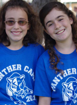

|
 |
|
|
The Slice | MARCH / APRIL 2012
Starting Adolescence and Adjusting to a New School “Sixth grade is like
kindergarten, like starting all over again.” The transition into middle school characterizes the end of childhood and the beginning of adolescence; a seismic shift that requires students to accept many new challenges, both social and academic. At home, parents and children struggle with redefining roles and relationships. In school, students need to communicate, participate and work cooperatively, exercise self-control, and resolve conflicts thoughtfully, without resorting to avoidance or aggression, according to the Association for Middle Level Education (AMLE). And it’s not just students who experience anxiety about this significant transition; parents also face fears of separation and their children’s growing independence. Concerns about the much larger, more intimidating campus, changes in the student population, an expanded teacher base; tougher homework, or simply just starting over on the bottom rung, are all topics that can provoke anxiety in either generation, according to Linda Howard, the seventh-grade Counselor at JLS Middle School. “We’re lucky to be able to move with our students throughout their middle school years, thanks to the generosity of PiE donors,” says Howard. A key indicator
of a successful middle school experience, according to the National Education
Association, is a positive transition from elementary school. Mangla Oza, a
long-time fifth grade teacher at Duveneck Elementary School, agrees. She
emphasizes personal organization and study habits to best prepare her students
for success. And each spring, all sixth-grade counselors meet with every fifth
grade teacher from their feeder elementary schools to discuss the incoming sixth
graders individually. Oza considers this the most critical component. Gregory
Barnes, Principal at Jordan Middle School, notes that teacher input, combined
with the family information cards, “are at the heart of our orientation efforts
and planning for sixth graders.” After Parent Information nights, PiE-sponsored tours, and student panels that bring elementary school alums back to their alma maters for frank, peer-to-peer exchanges, incoming students and parents begin to form a realistic expectation of the middle school experience. When fall comes, sixth-grade orientations, which range in length from a few days to a full week, begin. Each PAUSD middle school approaches issues of community and school citizenship in a unique way. Counselors help plan the multi-faceted curriculum, so by the end of orientation, new middle school students are adept with their locker combination, know how PE works, have met every sixth grade teacher on campus, and will likely have made some new friends. Best of all, they have been assigned a counselor who will remain with their class throughout their middle school career. Providing a positive and successful first impression is part of any successful transition program. Terman Counselors Bahvna Narula and Michele Chin agree that the orientation program they designed and revise each year is an invaluable and effective community-building activity that hopefully lessens concerns, builds confidence, and reduces anxiety for new students. Eighth graders actively participate as team leaders, providing a unique opportunity to nurture their mentoring skills. Consequently, when these eighth-graders transition to high school, they are prepared for the leap. “We have been encouraging them to self-advocate since they first arrived in sixth grade” says Marti Jacobs, eighth-grade Counselor at Jordan. JLS Counselor Arvand Arya, agrees. “After going through three years of middle school with their own, dedicated counselor, eighth grade students are much more open to sharing their concerns and finding solutions with the support of trusted adults.” Parents should also reach out for support, from the early days of middle school through the big transition into high school. “The best advice I can give parents,” says Chin, “is to get to know the caring community of parents all around you. There are so many people who can support you and your child. You never have to feel alone.” Adds Howard, “Our goal is to be responsive. We want to encourage families to reach out to their school community to assuage their understandable fears. We are one big family here in PAUSD, and we all look after one another.” More Great Tips for Parents to prepare for those middle school years: What's best for kids
|
|
|
|
pausd.org | site map |
© 2012, Partners in Education | EIN (Tax ID#): 77-0186364 | tel: 650.329.3990 | fax: 650.329.3723 |